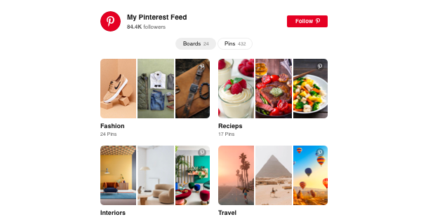
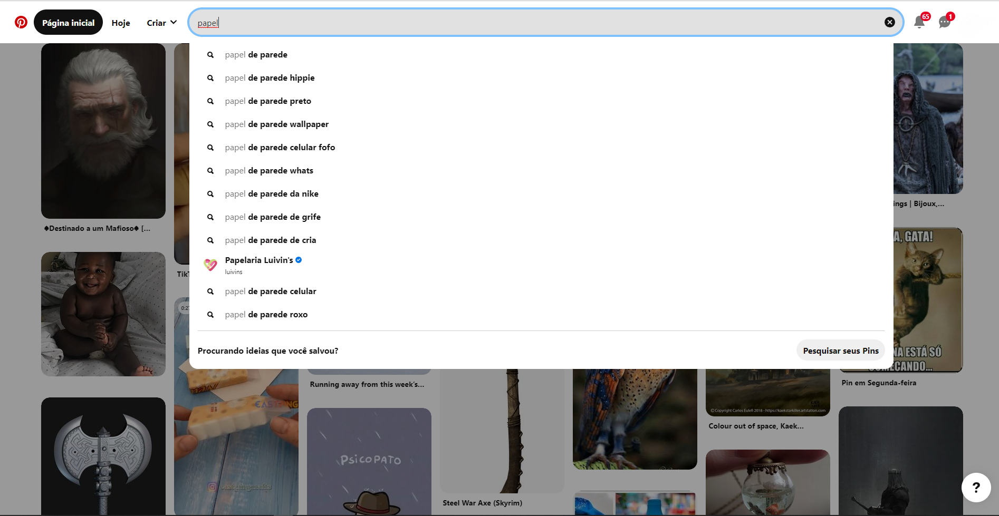
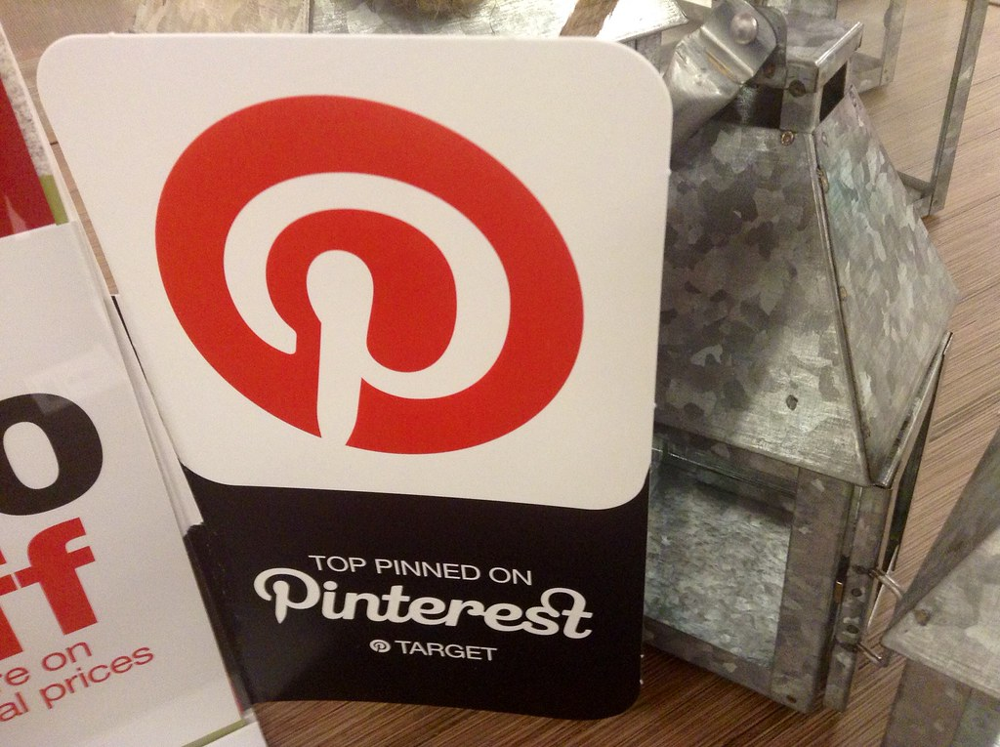
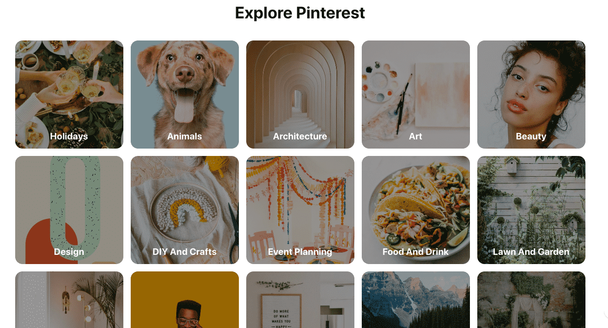
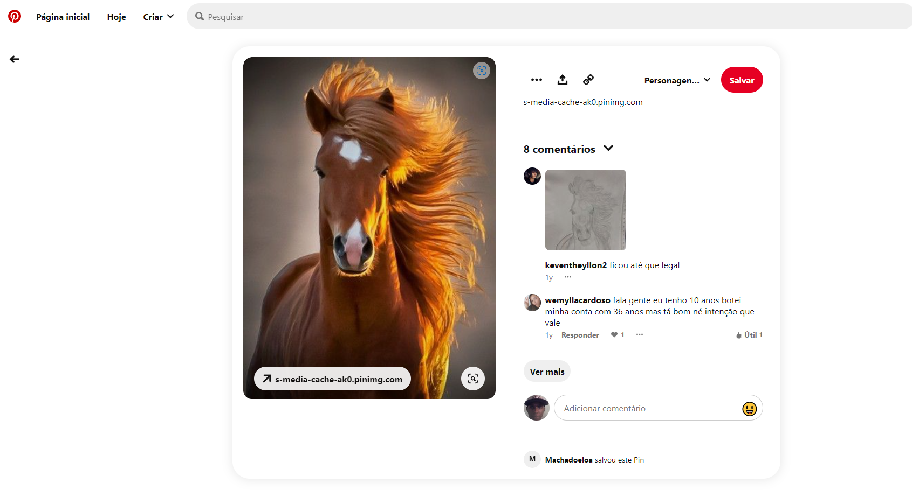

Usando a rede social
1 - O Feed do Pinterest
Apos concluir o seu cadastro, a rede social vai mostra um feed contendo ideias relevantes aos assustos que te interessam e você pode buscar na barra de pesquisas por ideias especificas.
2 - Os Pins
Pins são imagens criadas para serem salvas, compartilhadas e clicadas dentro do Pinterest.
Eles aparecem na sua timeline, nas categorias e nos resultado de buscas do Pinterest – tanto no mobile quanto no desktop.
Todos os Pins são adicionados ao Pinterest pelos usuários a partir de sites, blogs, portais, ou ainda, as próprias marcas salvam eles na plataforma diretamente.
Mas eles são muito mais do que apenas imagens. São bookmarks visuais e interativos que, quando clicados, levam o usuário ao site de origem do conteúdo em questão.
Ao clicar em um Pin você abrirá o close-up, deixando a imagem maior para melhor visualização
Logo abaixo terá a opção Mais como este, que exibe uma lista de Pins correspondentes ou semelhantes a esta imagem
No canto superior direito terá o botão Salvar. Navegue entre as pastas com o botão